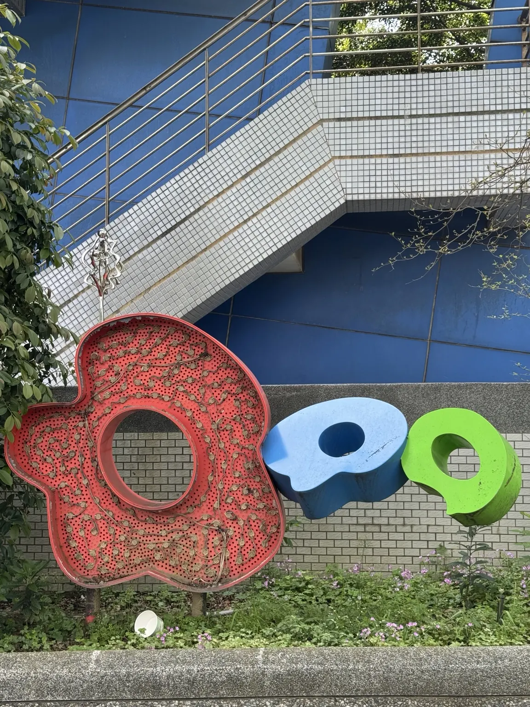
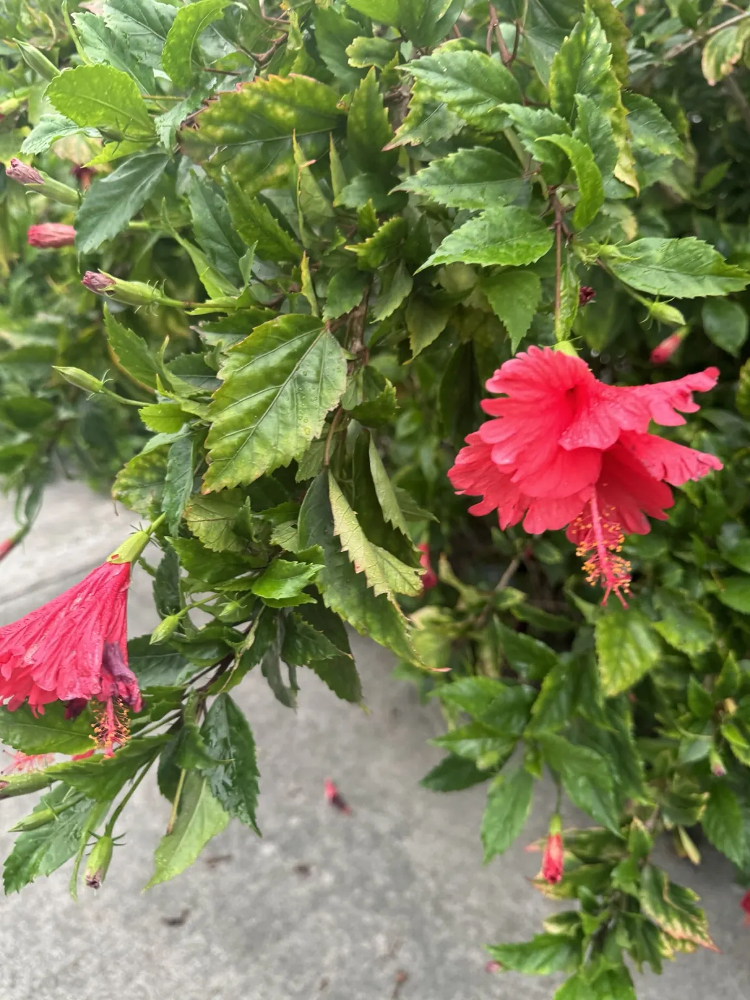

👩🏫 老師示範題
開始
不計分・不洩題
先學會
兩種玩法
集合點旁完成，正式出發就不容易卡住。
🎨 AR 掃描
🌺 AI 植物辨識
示範素材和正式四關完全不同。老師帶著大家操作一次就好。
開始 AR 示範
示範 A｜AR
找到集合點旁的彩色裝置

找到照片裡的紅、藍、綠裝置後，開啟 AR 體驗。
📱 開啟 AR 示範
AR 頁面會使用相機，請允許相機權限。
示範 B｜AI 植物辨識
找到集合點旁的扶桑花

1
找到同一株植物
先觀察花和葉子的形狀。
2
拍一張「花＋葉」都清楚的照片
3
把照片傳給 AI
問：「請問這是什麼植物？」
AI 回答後，再回到這裡選答案。
A. 杜鵑
B. 扶桑（朱槿）
C. 馬纓丹
完成示範
示範完成
🎉 正式闖關可以出發了
AR：
找地標 → 開相機 → 對準 → 看虛擬圖案
植物：
找植物 → 拍照 → 問 AI → 回網站作答
進入正式闖關
回首頁